Altura que concentra
Entre 1400 y 1800 msnm el grano madura lento, gana densidad y desarrolla una acidez cítrica brillante.
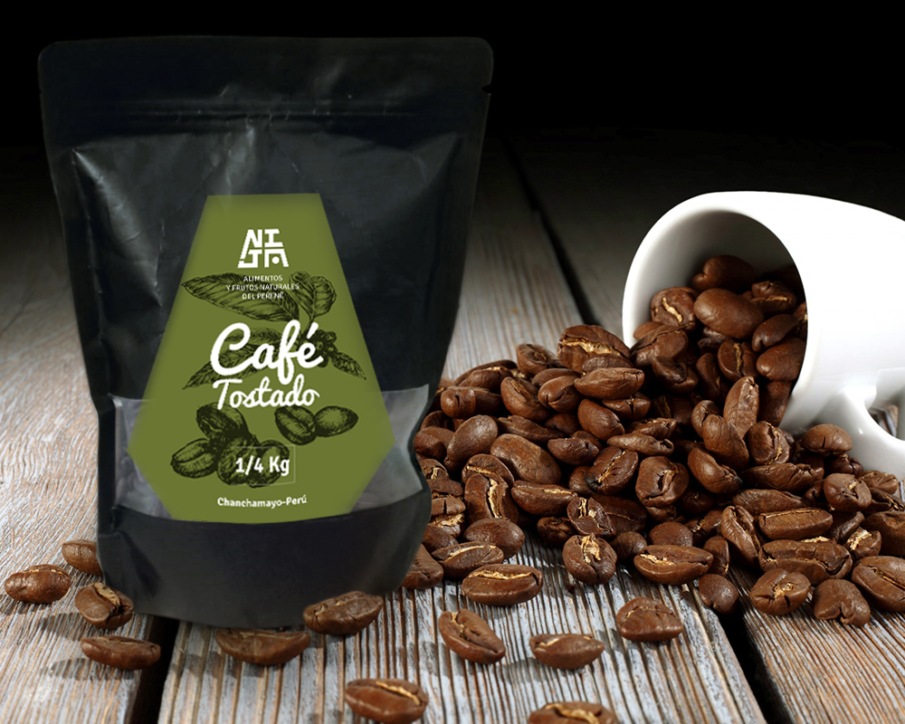
Cultivamos y tostamos café de origen entre los 1400 y 1800 msnm, en el valle del Perené — Chanchamayo. Una marca familiar construida sobre el legado Ashaninka, el trabajo honesto y la pureza de nuestra selva.
Grano a grano, solo cerezas en punto óptimo de maduración.
Proceso lento y natural que preserva los azúcares del grano.
Perfiles claro, medio y oscuro bajo normativa regulada.
Cultivo bajo sombra, amigable con el bosque y su biodiversidad.
Somos Cienti Selva Perú SAC, una empresa dedicada a la producción y fabricación de productos a base de frutos cultivados en el valle del Perené, Chanchamayo. Nuestro café nace de un vínculo largo con la tierra y con las familias que la trabajan.
NIJA Lengua Ashaninka
Significa valle o quebrada. El nombre señala nuestro lugar en el mundo: el valle del Perené, un territorio extraordinariamente rico en variedad de frutos.
Nuestro símbolo está inspirado en el arte Ashaninka presente en su textilería y sus pinturas. El trapecio, la línea y el trazo componen una identidad simple y funcional, fiel a lo que somos.
Natural y originaria
Respeto por el bosque y por quienes lo habitan.
Familiar
Una empresa de familia, con trato cercano y directo.
Integridad y ética
Comercio justo con nuestros productores aliados.
Innovación
Trazabilidad y calidad al alcance del consumidor.
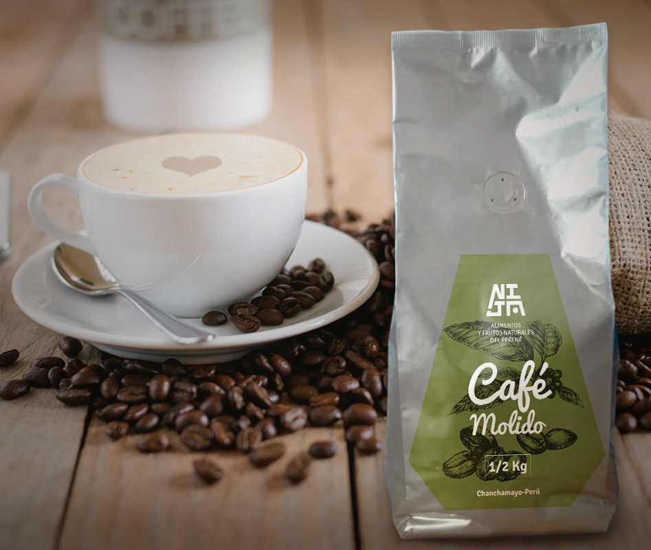
Nuestro café crece en el Anexo Metraro, valle del Perené, la tierra que honró la resistencia de Juan Santos Atahualpa. Un territorio de microclimas particulares donde la altura, la sombra y la lluvia hacen el resto del trabajo.
Entre 1400 y 1800 msnm el grano madura lento, gana densidad y desarrolla una acidez cítrica brillante.
Producción natural y amigable con la ecología, integrada al bosque en lugar de reemplazarlo.
Una marca centrada en el legado, el arte Ashaninka y el bienestar de las familias productoras.
Conservamos semillas de origen Geisha, Típica y Bourbon, incluidas guías roja, verde y dorada.
Control de calidad y buenas prácticas agrícolas exigentes en cada etapa, con trazabilidad al alcance del consumidor.
Recolección manual de cerezas maduras, una por una, en fincas ubicadas sobre los 1400 msnm.
Procesos Lavado, Honey y Natural, estandarizados y elegidos según el perfil que buscamos.
Secado lento en tarimas, bajo sol controlado, hasta alcanzar la humedad ideal del grano.
Tostaduría especializada bajo normativa regulada. Tueste claro, medio u oscuro; molido fino, medio o grueso.
Elige la presentación y pide directo por WhatsApp. Todos nuestros empaques son bolsas trilaminadas de alta densidad, de 8 pliegues con zipper y válvula desgasificadora.
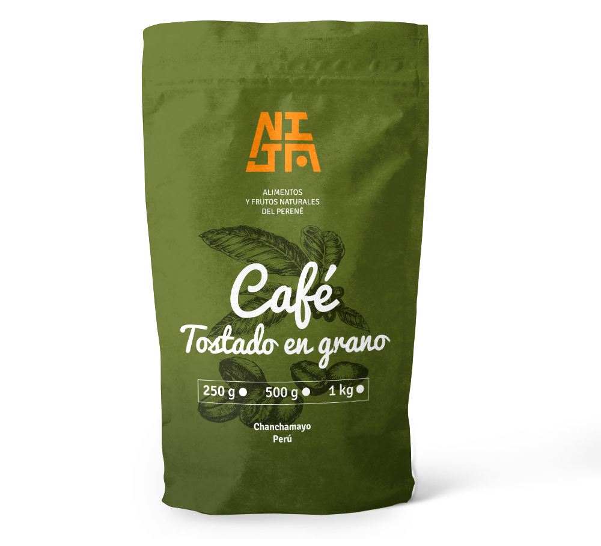
Café de especialidad
Nuestra variedad insignia. Taza excelente a extraordinaria, de cosecha selectiva y microclima propio.
S/ 119Incluye IGV
Pedir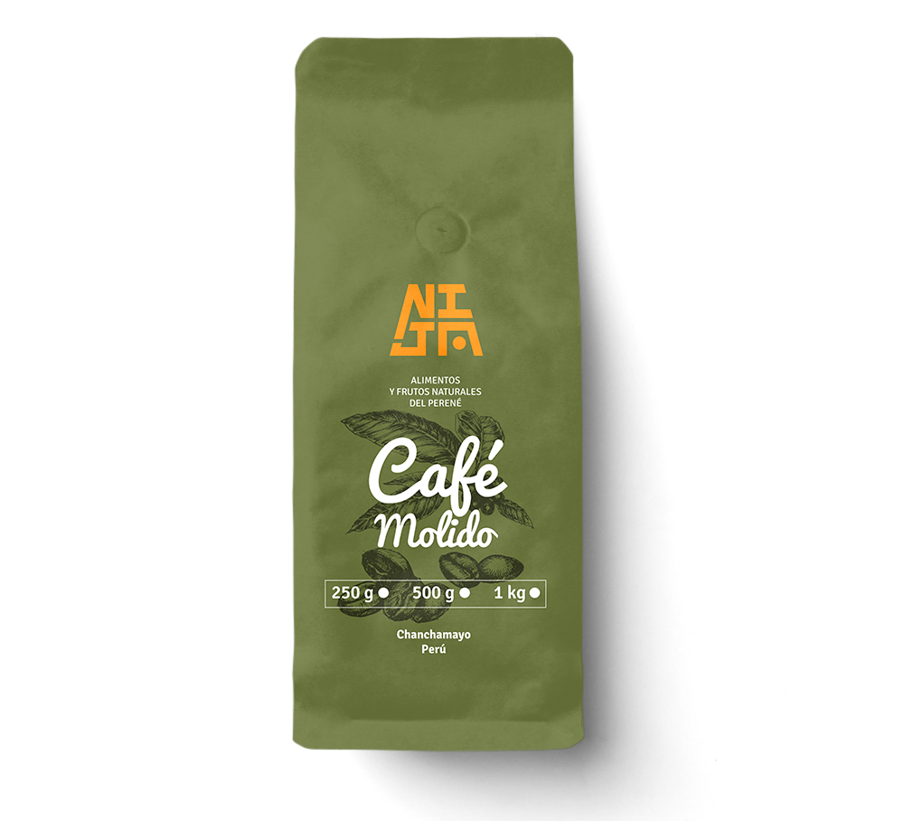
Café de especialidad
La misma taza Geisha, molida a tu medida: fino, medio o grueso según tu método de preparación.
S/ 119Incluye IGV
Pedir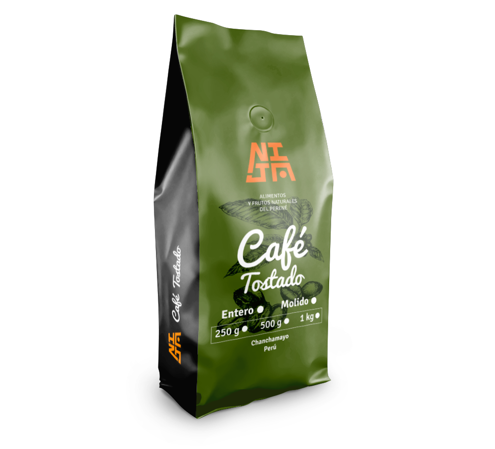
Café de especialidad
Mezcla equilibrada de Typica, Bourbon, Caturra y Pache. Nuestro café de todos los días.
S/ 99Incluye IGV
Pedir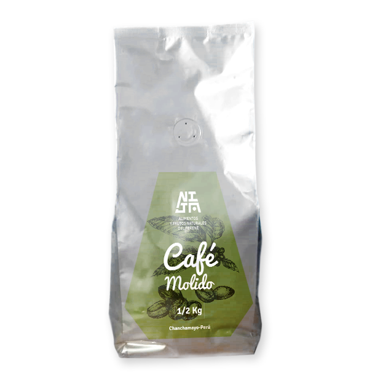
Café de especialidad
Nuestro blend listo para preparar. Ideal para cafetera de filtro, prensa francesa y uso diario.
S/ 49Incluye IGV
Pedir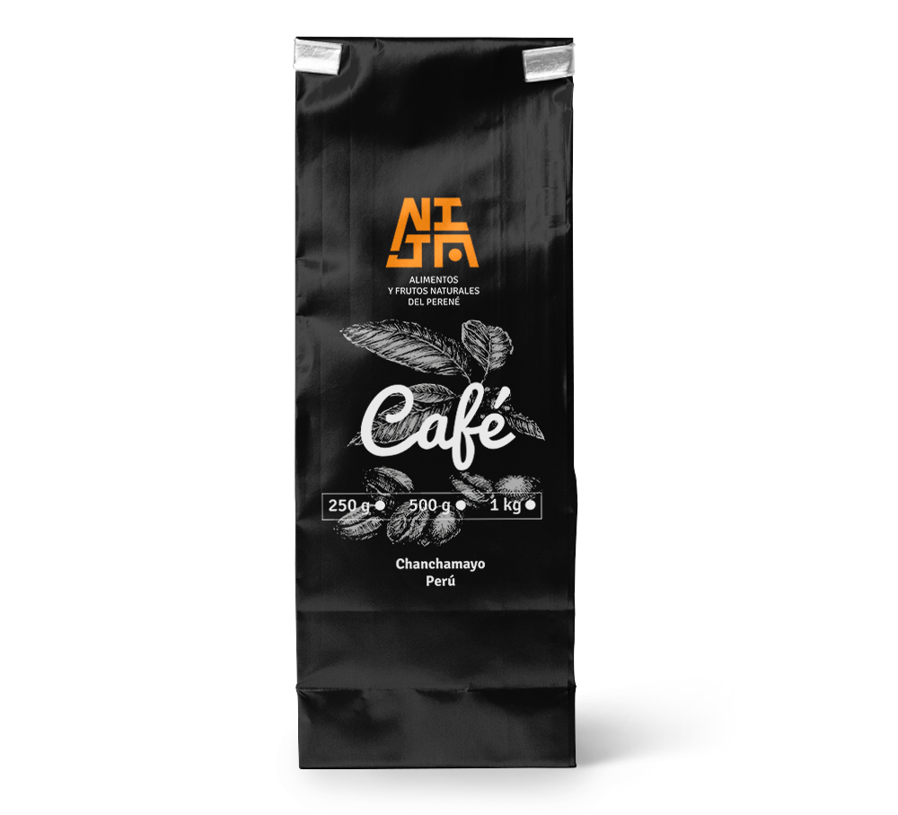
Café convencional
Taza muy buena, de 80 a 85 puntos. La opción rendidora para cafeterías y consumo frecuente.
S/ 59Incluye IGV
Pedir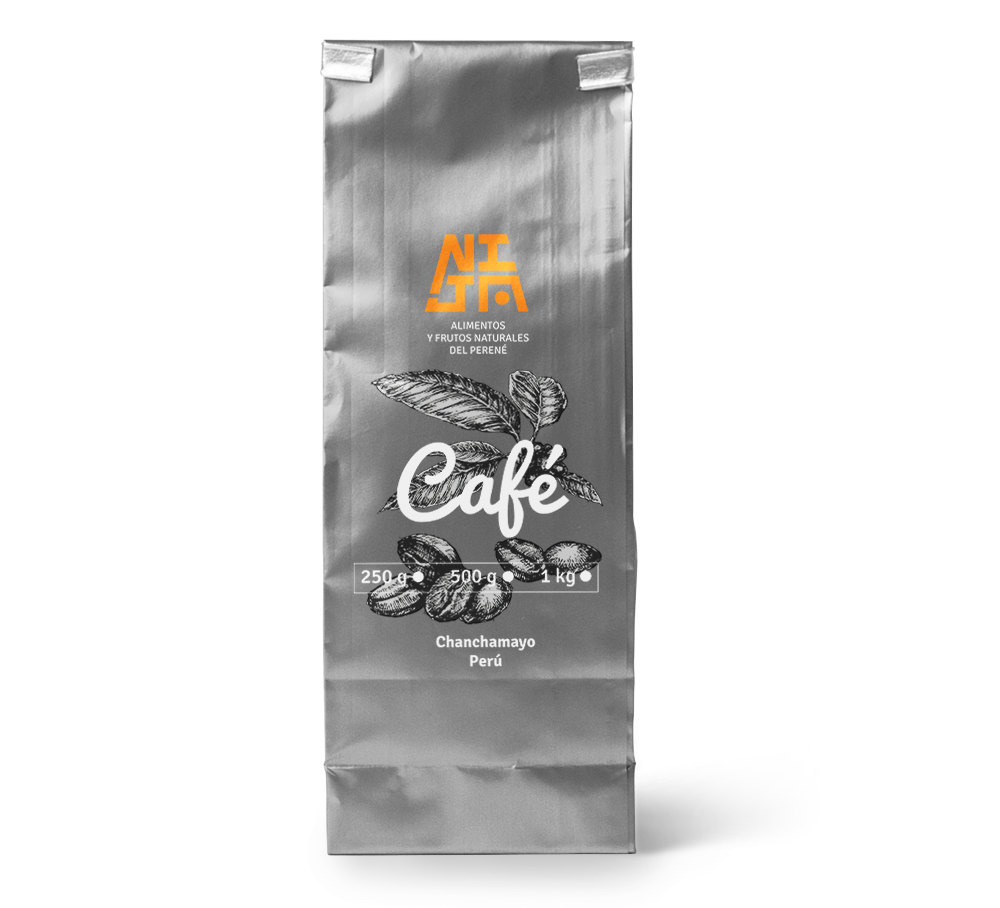
Café convencional
Café molido de rendimiento, cultivado bajo sombra sobre los 1400 msnm con trazabilidad completa.
S/ 59Incluye IGV
Pedir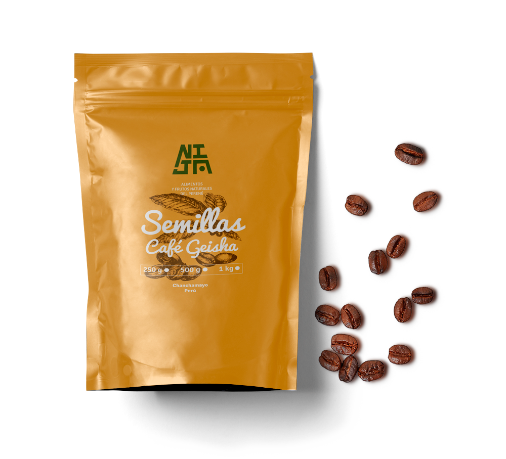
Semillas de origen
De nuestro banco de germoplasma: guía roja, verde y dorada. También disponibles Típica y Bourbon.
S/ 159Incluye IGV
Pedir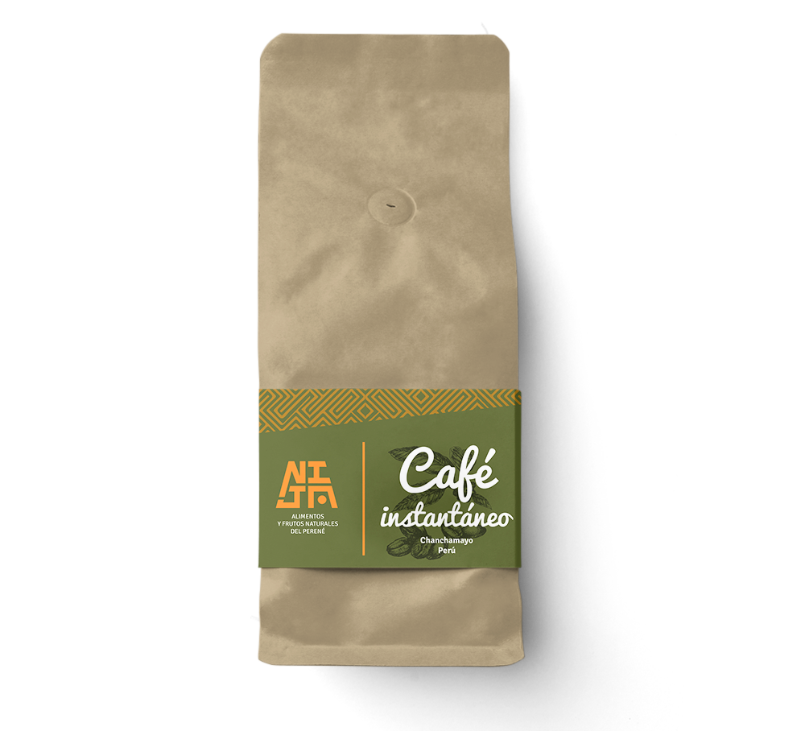
Otros formatos
Nuestro café soluble, con el mismo origen del valle del Perené. Presentaciones y precio a consultar.
ConsultarSegún volumen
Consultar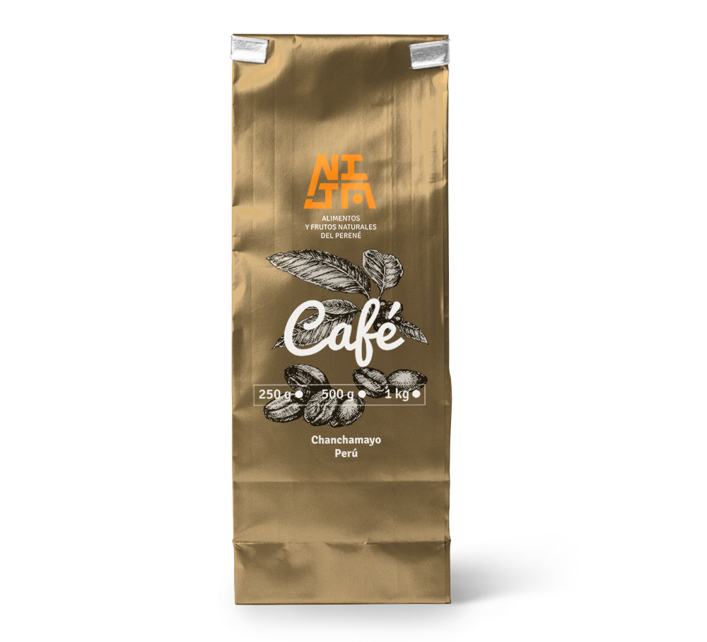
Otros formatos
Lotes especiales de microlote con proceso Honey o Natural. Disponibilidad limitada por campaña.
ConsultarLote limitado
ConsultarPrecios referenciales en soles, incluyen IGV. Para pedidos por volumen, marca blanca o exportación, conversemos como partners.
Ficha técnica de nuestro Café Tostado y Molido Classic, elaborado con la mejor selección de granos de café arábico, tostados suavemente para obtener un café puro de aromas naturales.
| Ingredientes | Café 100% arábigo |
|---|---|
| Variedades | Típica, Caturra, Geisha, Bourbon |
| Origen | Anexo Metraro — Perené, Chanchamayo |
| Altitud | 1400 – 1800 m.s.n.m. |
| Tipo de tueste | Claro, medio u oscuro |
| Tipo de molido | Fino, medio o grueso |
| Postcosecha | Lavado, natural o honey |
| Presentaciones | ¼ kg · ½ kg · 1 kg |
| Envase | Bolsa trilaminada de alta densidad, 8 pliegues con zipper |
| Registro sanitario | 0208918NKCGNPR |
| Vida útil | 01 año |
| Fragancia / aroma | Floral |
|---|---|
| Sabor residual | Chocolate |
| Acidez | Cítrica |
| Cuerpo | Balanceado, terso y cremoso |
| Taza | Limpia |
| Dulzor | Afrutado |
Puntos en taza Categorizado como café de especialidad por su sabor distintivo y la ausencia de defectos. Nuestros lotes de alto rendimiento alcanzan taza excelente (85–90) y extraordinaria (91–100).
Lleva a tus clientes café de especialidad con origen, identidad y calidad desde el valle del Perené. Trabajamos con cafeterías, distribuidores, hoteles y marcas que quieren un café con historia detrás.
Déjanos tus datos y te enviamos precios por volumen y condiciones.
Atendemos pedidos a todo el Perú y consultas de exportación. Escríbenos por el canal que prefieras.
Las Begonias 121, Urb. Santo Tomás
Chanchamayo — Junín, Perú
Cuéntanos qué café buscas y te respondemos con disponibilidad y envío.